Chapter 4 Business Activity
4.1 GDP
Key Points:
- Real GDP rose at an annual rate of 3.7% in Santa Barbara County in 2018, compared to a 2.9% increase in 2017.
- The Finance and Insurance industry was the largest contributor to Real GDP in Santa Barbara. This industry was the second largest contributor in 2017, while the largest was Government.
- Company Management was the fastest increasing industry in 2018, with an increase in GDP contribution of 41.8%.
Real Gross Domestic Product (GDP) measures the value of all goods and services produced within a certain location over a certain period of time. It remains one of the best measures of economic growth and well-being, not only for the nation but also for local areas. Unlike the data on national GDP, data on GDP for Santa Barbara County is only reported annually and at a considerable lag. Typically, we rely on alternative measures to judge the health of our local economy like employment statistics and housing prices, which are released more frequently. However, GDP remains a relevant statistic to determine long-run trends in the county’s economic growth and industry mix. It also allows for a direct comparison to growth in the nation and state.
Real GDP growth in Santa Barbara County for 2018 was 3.7%. This marks two consecutive years of increasing GDP, as 2017 real GDP in Santa Barbara County increased by 2.9%. From 2008 to 2018, eight years have seen growth, with the largest increase being 7.2% in 2015. U.S real GDP increased by 2.5% in 2018 and has had upward growth for nine consecutive years, starting in 2010. Real GDP rose in California by 4.25% in 2018, slightly lower than the increase of 4.4% in 2017.
Real GDP increased by 2.5% in 2018 for San Luis Obispo. From 2010 to 2018, San Luis Obispo has had nine consecutive years of positive real GDP growth rates. Similar to Santa Barbara County, San Luis Obispo experienced its highest growth rate of the past 10 years in 2015, at an increase of 6.3% in 2015. Ventura County experienced a 1.3% increase in real GDP in 2018. Ventura County has had growth since 2013; however, the growth rate has been consistently decreasing since 2015, with an average decrease of 0.7 %.
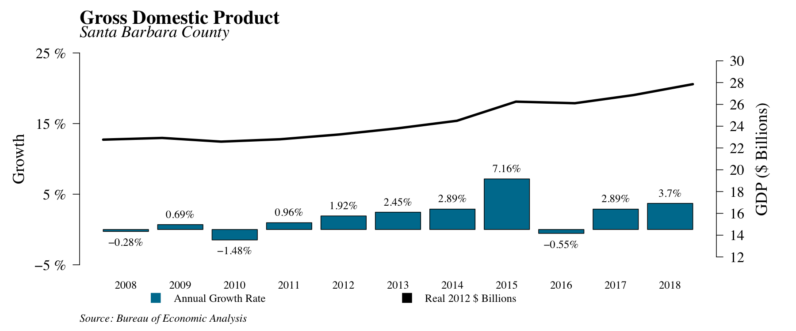
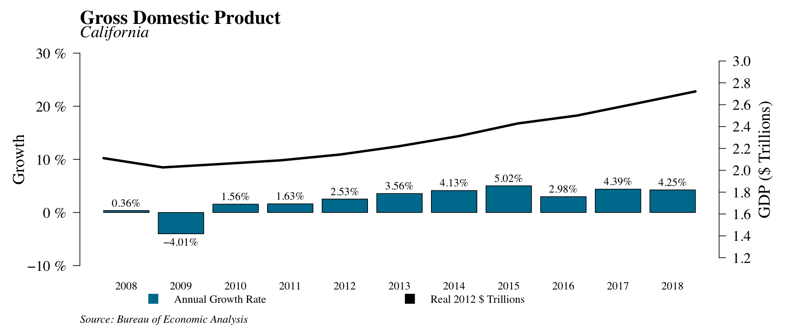
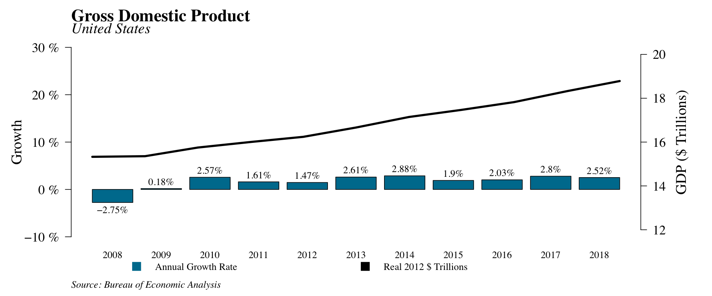
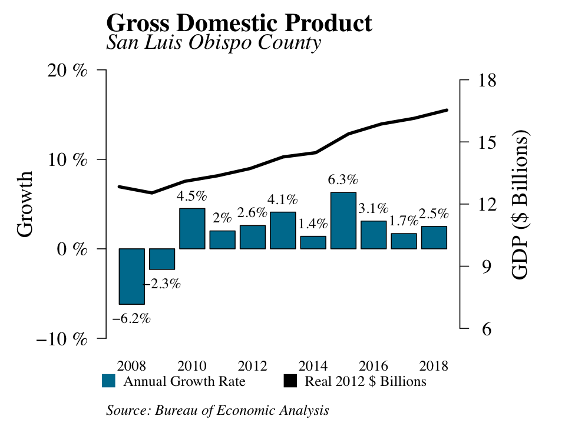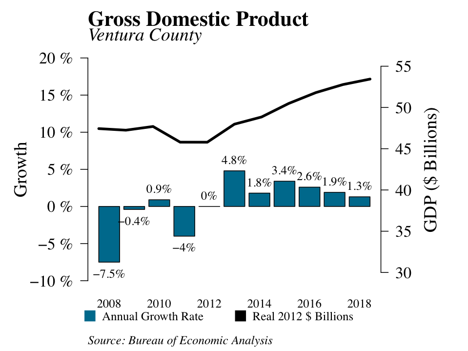
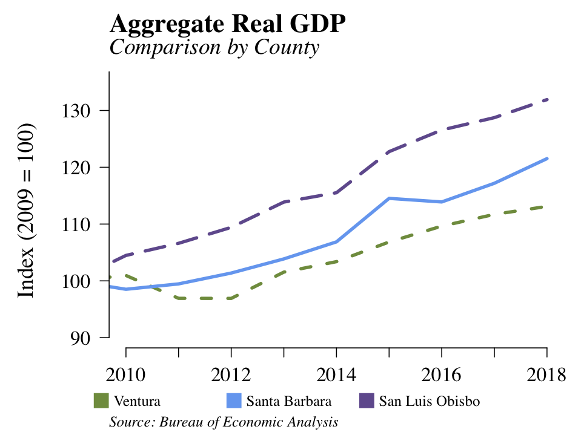
Industry Growth
The largest five industries in 2018 were Finance, Real Estate, Manufacturing, Government, and Professional & Business Services, in that order. Four of these five industries were also the part of the five largest industries in 2017—Manufacturing is now the third largest industry compared to Trade in 2017. Finance was the second largest industry in 2017, trailing Government by a margin of $480 million. However, in 2018, Government was the fourth largest industry, trailing Finance by $1,087 million.
The fastest growing industry in 2018 was Company Management, which experienced GDP growth of 41.8% from 2017. Companies that fall into this industry are those whose roles include holding securities of other companies in order to influence management, administration and management services, as well as strategic or organizational planning and decision-making. The second-fastest growing industry in Santa Barbara County was Utilities, with GDP growth of 18.3%. Mining had the largest growth rate in 2017, at 55.1%, while in 2018 this industry had the fourth largest growth rate of 13.4%. This illustrates the volatility and cyclicality of the Mining industry. Total Farm had the third largest growth rate in 2018 at 16.2%, and Professional and Business Services had the fifth largest growth rate at 10.2%.
The five industries with the weakest growth in 2018 were Information (-5.5%), Arts (-4.1%), Manufacturing (-1%), Construction (0.2%), and Finance (0.5%). From 2017 to 2018, there was no continuity in industries that experienced weakest growth. It is interesting to note that, even though Finance and Manufacturing were the first and third largest contributors to real GDP in Santa Barbara, they experienced the fifth and third weakest growth in GDP at 0.5% and -1%, respectively.
Per Capita GDP
Real GDP per capita for Santa Barbara County in 2018 was $62,384. This was higher than San Luis Obispo ($58,225) and lower than Ventura County ($62,798). Santa Barbara County’s real GDP per capita was higher than that of the United States’ value of $57315, but it was lower than California’s real GDP per capita of $68,881. In 2018, Santa Barbara County’s real GDP per capita increased by 3.7%, a significant uptick from the growth rate of 1.2% in 2017. Since 2010, Santa Barbara County has only seen on decrease in real GDP per capita, which occurred in 2016. When comparing growth rates of real GDP per capita with other Metropolitan Statistical Areas (MSAs) in the U.S., Santa Barbara County ranks 65 out of 384. This marks a significant improvement from the previous year of 2017, when the county’s ranking was 159. The MSA with the highest per capita GDP growth was Midland, TX at 21.9%, while the MSA with the lowest was Farmington, NM.
4.2 Prices
Key Points:
- Core inflation, which removes the effects of energy and food prices, increased by 2.19% from 2018 to 2019 in the United States, and by 3.07% in the Los Angeles Area.
- For the third year in a row, the Los Angeles Area CPI increased by more than 2.0%, the long-term inflation target.
The main measure of inflation is the Consumer Price Index (CPI). This index is calculated by taking the change in prices paid by urban consumers for a fixed basket of goods and services, which is representative of what a typical consumer purchases. In 2019, the CPI for the Los Angeles Area increased by 3.07%. This is higher than the overall U.S. inflation in 2019 of 1.81%.
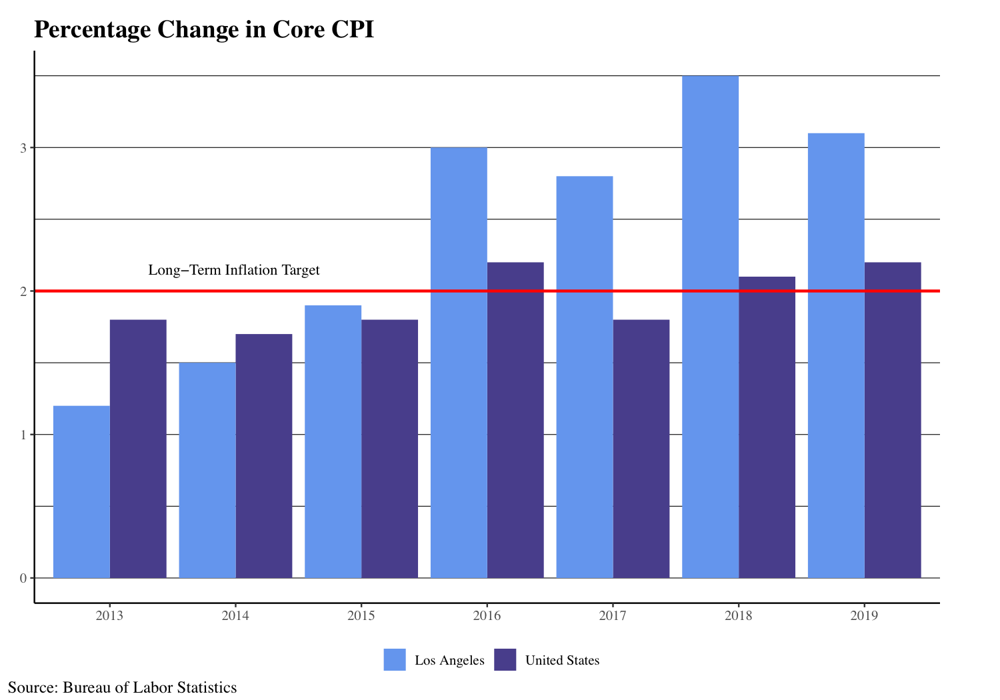
Core CPI is often thought of as the best measure of inflation. It resolves issues and concerns regarding volatility by removing food and energy from the basket of goods and services. By this measure, inflation was 3.07% in the Los Angeles area for 2019, which is similar to the value of change in standard CPI—only 7.3% higher than the inflation rate calculated using standard CPI measure. The core CPI value for Los Angeles was 5.23% higher than the value for the US in 2019. Los Angeles has consistently had a higher core CPI than the US for the last several years. The FED hit their long-term inflation target of 2.0% for the first time in 2016 since 2008. The inflation rate increased drastically in 2019 for Los Angeles, hitting high above the FED’s target. However, it did not increase as much in comparison with the previous year, when the inflation rate in Los Angeles was 3.15%. The FED achieved their 2.0% benchmark in 2019 with the core CPI for the U.S. being slightly above their target.
CPI for energy in the Los Angeles Area increased by 3.44% in 2019, while U.S. energy CPI decreased by 2.11%.
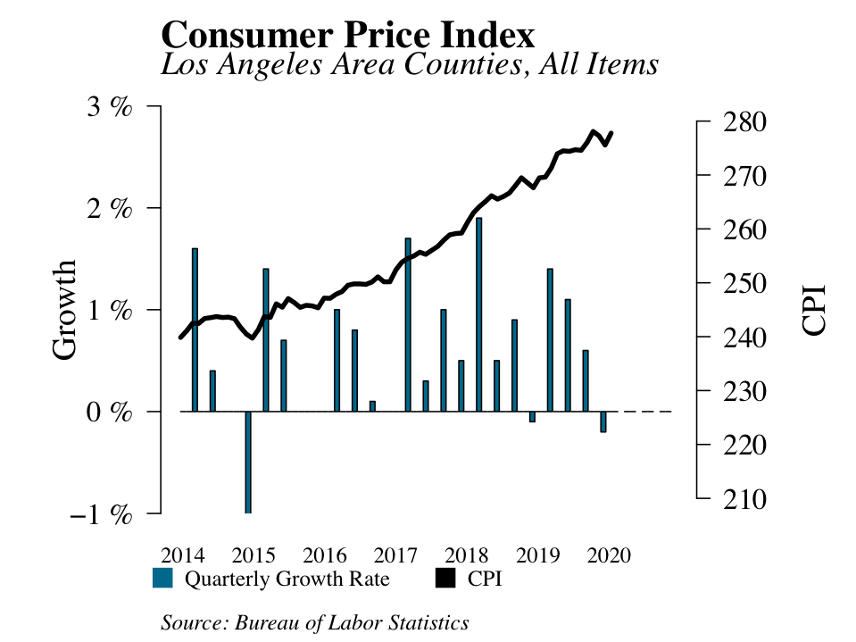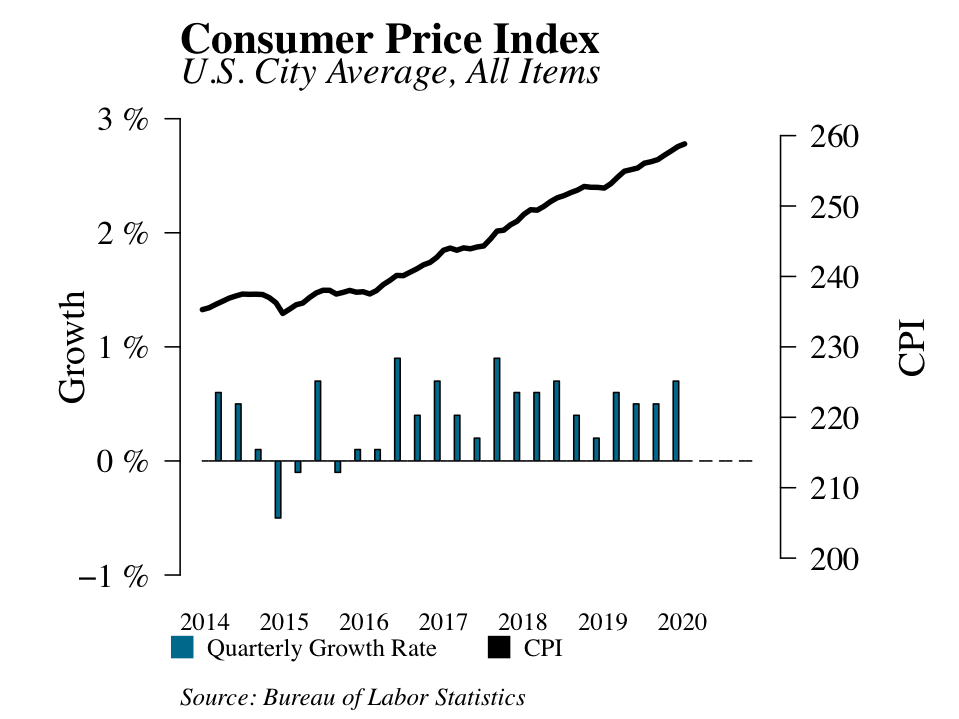
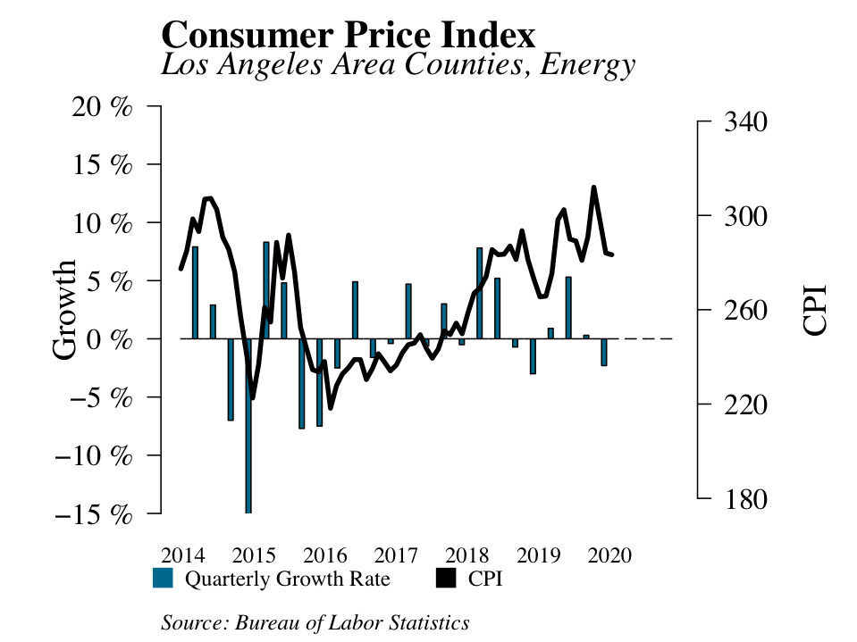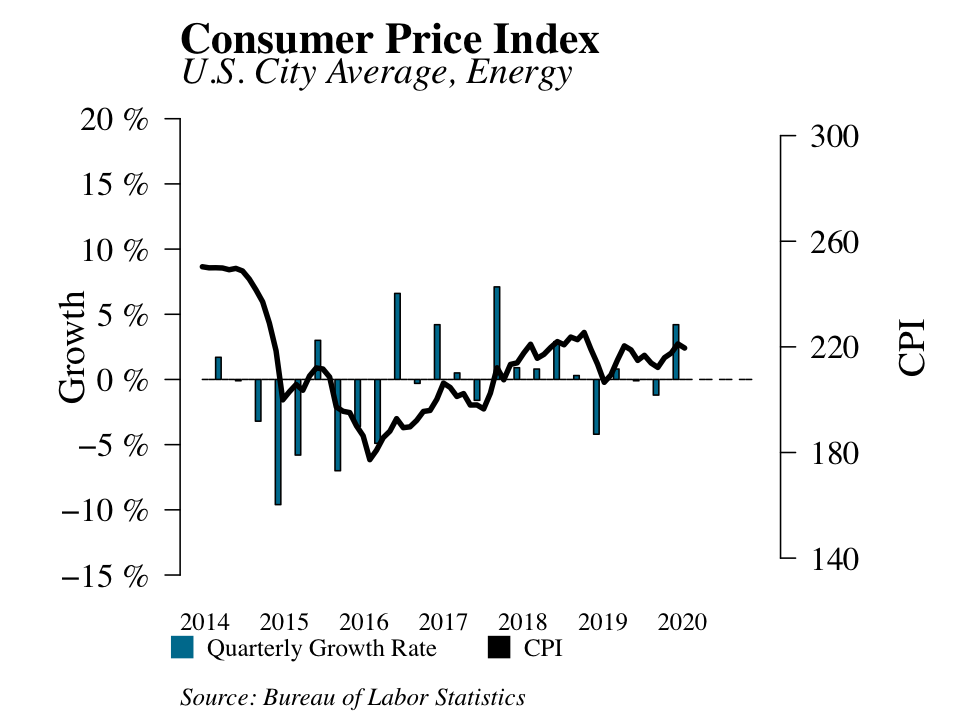
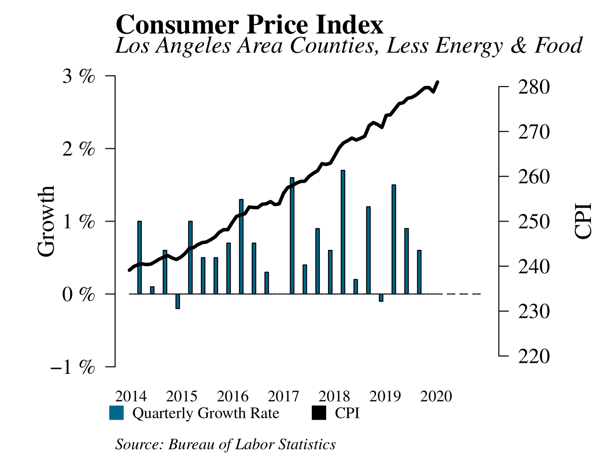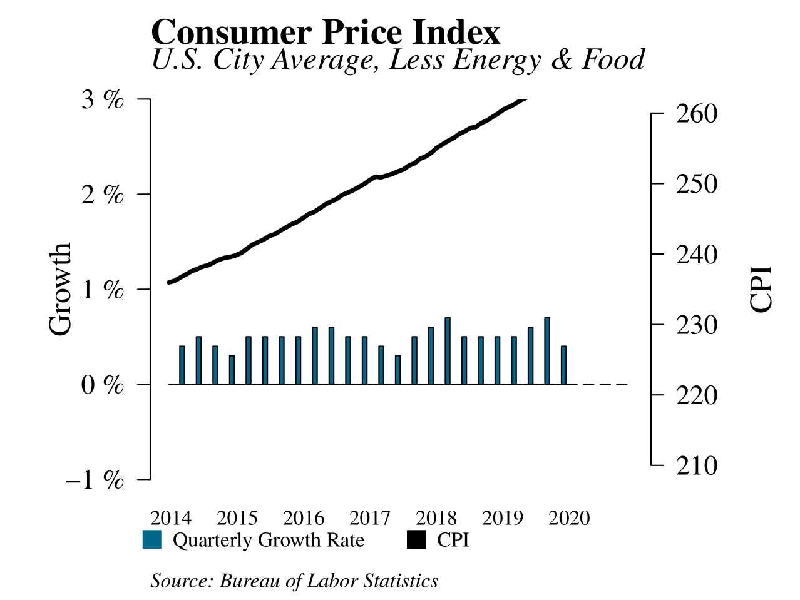
4.2.1 Monetary Policy
After about seven years of the effective fed funds rate remaining near zero, the Fed finally started the process of raising rates, or “liftoff,” in December 2015, raising the target range for the overnight funds rate from 0%-0.25% to 0.25%-0.50%. They continued this process and raised the target range by another quarter-point to 0.50%-0.75% in December 2016, to 1.25%-1.50% in December 2017, 1.50%-1.75% in March 2018, and to 2.25%-2.50% in December 2018. However, in 2019, the Fed started to lower the range for the overnight funds rate from 2%-2.25% in August, from 1.75%-2.00% in September, and most recently, from 1.50%-1.75% in October.
The Taylor Rule, a monetary-policy “rule” that suggests the nominal interest rate be set in response to changes in inflation and output, has decreased in 2019. This is due to the inflation rate being below the Fed’s target level of 2%. Currently, the Taylor Rule suggests nominal interest rates should be about 3-4%. Going forward, if the Taylor Rule is any indication, the fed funds rate should continue to decrease.
4.3 Retail Sales
Key Points
- Retail sales growth continued its steady climb throughout the entirety of 2017 at an average growth rate of 0.49% every quarter.
- With 20.06% of total taxable sales, Food Services and Drinking Places remained the largest industry in the county.
- Buellton had the largest one-year growth in total sales of 10.3%, and Carpentaria had the largest one-year decline in growth of -7.05%.
Retail sales grew throughout 2017. The annualized growth rates by quarter were 0.23%, 0.66%, 0.61%, and 0.47%, respectively. The 4-quarter moving average for retail sales in the county remained steady, slightly increasing throughout the year. Overall, growth was stronger than in 2016: average quarterly growth was 0.49%, compared to 0.28% in 2016.
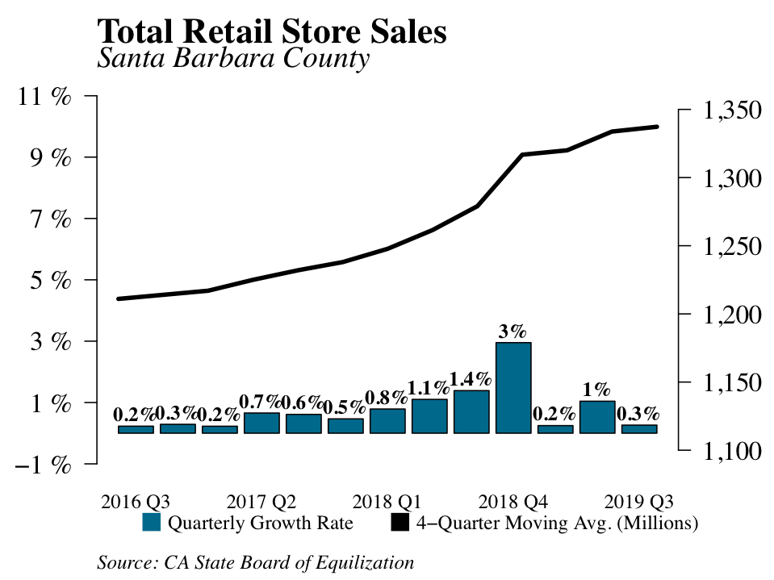
Disaggregated by industry, the top two industries (excluding Other Retail Group) by percentage of total sales was represented by Food Services and Drinking Places at the top with 20.06% of sales, followed by Motor Vehicle and Parts Dealers at 19.14%. The top three industries by number of permits, excluding Other Retail Group, were Food Services and Drinking Places at 1,333, Clothing and Clothing Accessories Stores at 1,025, and Food and Beverage Stores at 519.
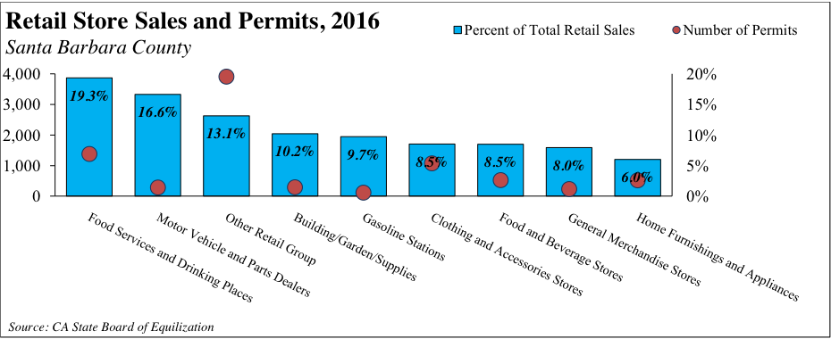
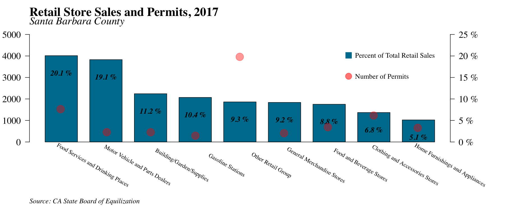
Santa Barbara County ranked 49th out of 58 counties in terms of sales growth in 2017, which is worse than the county’s rank of 43 in 2016. After growing exponentially for the past three years, the county of Alpine experienced the largest decrease in total sales with a drop of 24.8%. Five counties experienced decreases in total sales from 2016 to 2017: Alpine, Modoc, Kings, Trinity, and Kern counties.
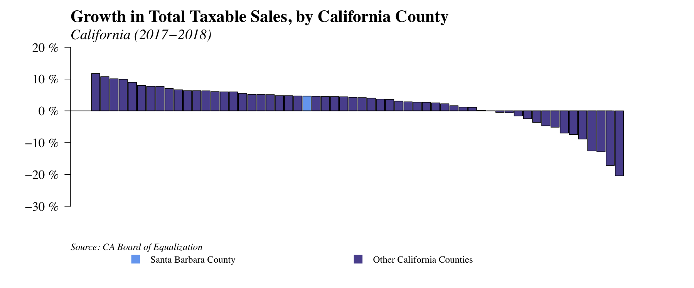
Three cities within Santa Barbara County decreased in total sales. Carpentaria decreased by 7.04%, Santa Barbara City by 1.69%, and Goleta by 0.66%. Buellton showed impressive growth of 10.33%, the highest in the county. Although Buellton had highest overall retail sales growth, it wasn’t the highest in sales growth per capita. Lompoc grew 9.12% in per capita sales, while Guadalupe grew 7.52%. In Buellton, the taxable sales per capita stands at $40,274, or 256% of the country average of $15,752, while in Guadalupe the taxable sales per capita is only $4,531 or 28.76% of the county average. This is a massive difference within the same county, with Buellton’s taxable sales per capita at almost nine times that of Guadalupe.
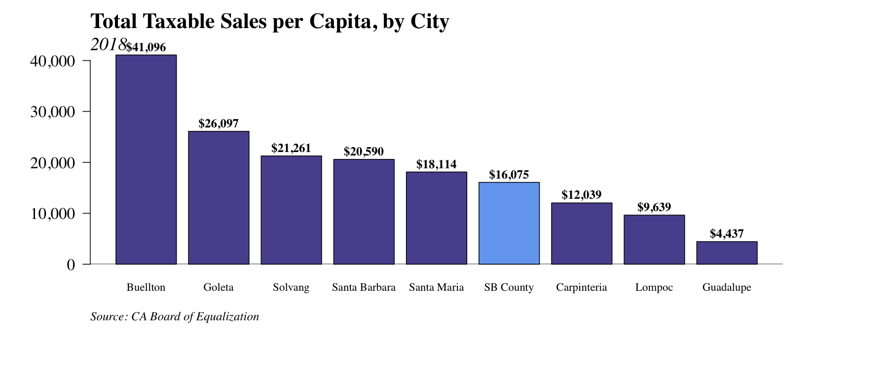